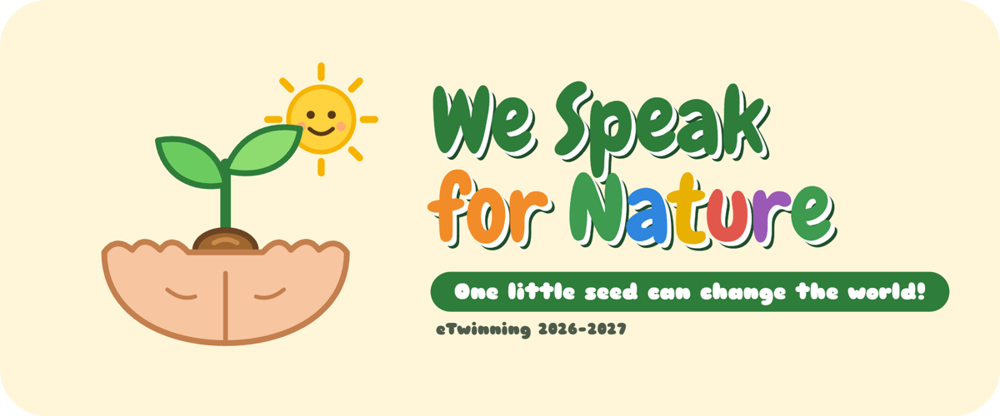

Η Δ΄ τάξη του σχολείου μας συμμετέχει φέτος στο ευρωπαϊκό πρόγραμμα eTwinning με τίτλο «We Speak for Nature». Οι μαθητές μας θα συνεργαστούν με συνομηλίκους τους από το σχολείο 8° CDS di Piacenza στην Ιταλία και το CEIP Puente Castro στη Λεόν της Ισπανίας.
Με έμπνευση το βιβλίο «The Lorax» του Dr. Seuss, κάθε μαθητής γίνεται «Φύλακας της Φύσης» και μιλά για ένα κομμάτι της: τα δέντρα, το νερό, τον αέρα, τα ζώα ή το έδαφος. Κάθε μήνα, σε διεθνείς ομάδες, οι μαθητές θα μαθαίνουν για ένα πραγματικό περιβαλλοντικό πρόβλημα, θα δημιουργούν κοινά έργα με ψηφιακά εργαλεία και θα αναλαμβάνουν μια μικρή δράση για το περιβάλλον.
Για παράδειγμα, θα φτιάξουν χριστουγεννιάτικα δώρα από ανακυκλώσιμα υλικά, θα κατασκευάσουν ταΐστρες για τα πουλιά της σχολικής αυλής, θα «υιοθετήσουν» και θα φροντίσουν ένα δέντρο του σχολείου και θα φυτέψουν σπόρους, συγκρίνοντας την ανάπτυξη των φυτών τους με εκείνα των συνεργαζόμενων σχολείων.
Το πρόγραμμα καλλιεργεί την περιβαλλοντική συνείδηση, την επικοινωνία στην αγγλική γλώσσα, τον ψηφιακό εγγραμματισμό και την ενεργό πολιτειότητα. Μέσα από αυτό, τα παιδιά αναπτύσσουν τη συνεργασία, τη δημιουργικότητα και την υπευθυνότητα απέναντι στο περιβάλλον.
Ένας μικρός σπόρος μπορεί να αλλάξει τον κόσμο! 🌍
This year our Grade 4 pupils are taking part in the European eTwinning project “We Speak for Nature”. They will work with peers from 8° CDS di Piacenza in Italy and CEIP Puente Castro in León, Spain.
Inspired by Dr. Seuss's “The Lorax”, every pupil becomes a “Nature Guardian” and speaks for one part of nature: trees, water, air, animals or soil. Every month, in international teams, pupils will learn about a real environmental problem, create joint projects with digital tools and take a small action for the environment.
For example, they will make Christmas gifts from recycled materials, build bird feeders for our schoolyard, “adopt” and look after a tree in our school, and plant seeds, comparing how their plants grow with those of our partner schools.
The project builds environmental awareness, communication in English, digital literacy and active citizenship. Through it, children develop collaboration, creativity and responsibility towards the environment.
One little seed can change the world! 🌍